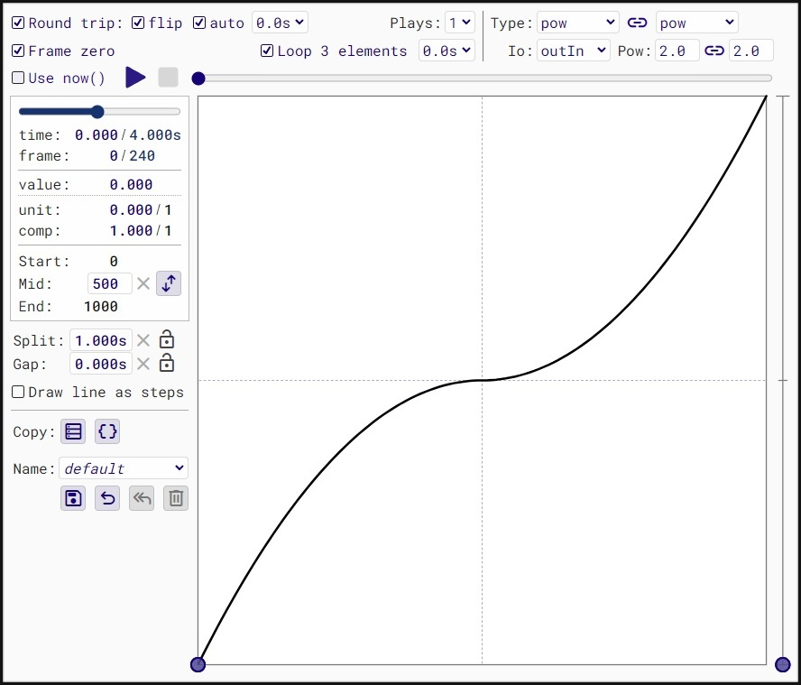
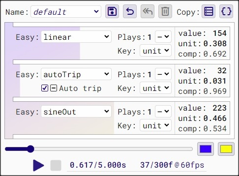
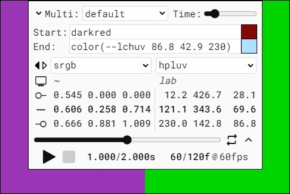
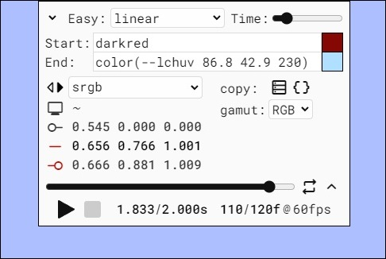
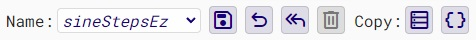

Apps
There are three apps available:
• Multi-Ease is multiple easings applied to a single property.
Common Features instructions are here:
Introduction
These apps were initially conceived for testing the library; then as a way to demonstrate the library; then as a way to generate JavaScript animation code to help fill in for the limited documentation. They all contain Copy Data buttons that copy tabular animation data to the clipboard for validation and analysis. To the immediate right is the Copy Code button, which generates JavaScript code for the currently configured animation and copies it.
rAF offers a wide variety of interdependent features. Some properties are arrays of user-defined length. Fitting it all into an app, or even a few apps, is daunting. It's certainly a monster to code and probably a monster to use. These apps, Easings in particular, limit the available values for some properties in order to make the interface simpler, while still meeting testing requirements. The auto-generated JavaScript code is a starting point, not a finished animation. You must alter property values in the generated code to adapt it to your web page.
Note: The animations that run when you click Play do more than the configured animation itself. They update the playback counters and animate the X axis slider too. There are multiple timing patterns, multiple targets, and between one and three external callback functions that run every frame. Your mileage may vary, depending on the configured animation and your device.
Note: The apps look best in Chrome/Edge/Opera. They function correctly in Firefox, Safari, and iOS, but I defer to native styles, which can impact page layout too. Styling here is basic and tries to avoid vendor prefixes. It adjusts some layout elements based on the brand of browser, but it's far from perfect.
Note: rAF uses milliseconds as the time units. The apps use seconds.
Note: rAF uses private properties, which are not supported by years-old versions of browsers. If your browser is not up to date, or if you're using an older device, go to caniuse.com for details on which browser versions offer support (currently 93.07% global support). If an app page doesn't display, this might be the issue. Check the Developer Tools console for more information.
Easings
The Easings app is not designed for mobile phones. At or below 675px width by 749px height, it shrinks to 75% and bottoms out there. For most easings you can go as low as 570px height without vertical scrollbars, but steps and out-of-bounds values use more height.
Easings allows you to design one or two-legged timing patterns in a CSS-like model, with flexible ease-in and ease-out settings. rAF allows for unlimited legs, but fitting that in an app is awkward. For user convenience, rAF also has features that mimic this same CSS-like model, and this tests most of those.
Timing functions include standard CSS and jQuery functions, with several enhancements. Steps functions are significantly enhanced, with the ability to apply a non-steps easing function to the steps values, timing, or both. Instead of the jQuery model of separate functions for exponents 2-5, rAF lets you specify any number that the Math.pow() function accepts. And more...
The chart is a 1000 x 1000 SVG canvas, with extra vertical headroom for out of range values <0 and >1000. Yes, with zero it's 1001 x 1001, but as with animation frames in this app, there is a zero value that is outside the animation range: the element's current value, pre-animation. Generally these zero and 1 have identical values, but not with {type:E.steps, jump:E.start}, where the initZero property becomes relevant.
The chart Y axis is the animation value, which is why there is a second visual indicator of its value to the right of the chart. The X axis is time, with numbers displayed in seconds, not chart units, and the time navigation slider as well.
What follows is in the terminology of rAF, which is not the same as the labels in the app, but they are similar enough and it's organized around the app's layout.
There are 4 Round Trip properties:
3 booleans: roundTrip flipTrip autoTrip
1 number: tripWait
roundTrip turns the feature on or off and enables or disables the other three properties.
flipTrip defaults to true: the return aka inbound trip follows the same line as the outbound trip. Setting flipTrip to false causes the inbound trip's line to mirror the outbound trip. Give it a try with any type other than linear, and the chart will illustrate it clearly. It makes no difference for linear.
autoTrip also defaults to true: the animation automatically executes the inbound trip after the outbound trip ends. The more unusual setting is false, where the animation stops at the end of the outbound trip, but stays in that state so the user can initiate the return trip. You cannot combine autoTrip = false with plays = greater than 1.
tripWait is the number of milliseconds to wait between the end of the outbound trip and the start of the inbound trip. It affects autoTrip = false too, acting the same as the Easy.prototype.wait property does for the outbound trip. (The wait property is not included in this app as there are already too many inputs and it's easily tested.)
Note: With tripWait set to zero, the animation will rarely get all the way to the end value. The clock keeps running, and unless the frame time stamp is exactly the end time, the value won't be the end value. There will be two frames with values that are very close, but not quite there. The same applies to loopWait.
plays is the number of times the animation plays. It is an integer, minimum of 1. The app limits it to a max of 3.
plays and loopByElm share a drop-down and a property: loopWait is the number milliseconds between plays or loops by element. The app limits it via the drop-down options.
loopByElm is a boolean that causes the animation to loop one element at a time.
frameZero is in the app for testing only. It's a fine detail of a setting that I'm not going to explain here now. If you're really curious, look at the code in AFrame.prototype.play(). Be careful turning it off for Firefox, as you will reproduce Bug 1864047.
useNow uses performance.now() instead of the requestAnimationFrame() timestamps and document.timeline.currentTime.
mid, split, gap are for two-legged easings only. They are shorthands for individual leg properties. Each has a Reset button, and split, gap have Lock buttons. By default Lock is off and split, gap scale relative to duration. You can see them adjust as you move the duration slider. Setting Lock to on keeps the value constant.
mid is the animation value at which the legs change. Defaults to 50% of the distance, in this case 500.
split is the animation time at which the legs change. Defaults to 50%.
gap is the number of milliseconds to wait between the end of the first leg and the start of the second. Defaults to zero.
Draw line as steps is not an rAF feature. It is an app feature that draws the chart's line as one step per frame. It's especially useful for viewing contiguous frames with a static value; with gap set greater than zero, for example. It is the more accurate representation of the animation. When it's off, the line is smoothed out to appear continuously changing.
Multi-Ease
The Multi-Ease app is designed to be used on recent mobile devices in the landscape aka horizontal position, as well as on tablets, laptops, desktops. Baseline size is 484px wide by 356px tall. It's minimum size is somewhere around 405x298. It does not scale, but reduces margins and changes to a smaller font-size and line-height.
Multi-Ease aka Multi allows you to configure animations where you choose a separate timing pattern for each argument in a property, attribute or function, or for masked numbers in an "unstructured" attribute like SVG points or function like CSS linear-gradient(). The app is fixed at 3 timing patterns, which is enough to test, demonstrate, and create starting point code. It animates the CSS clip-path property using the polygon() function.
The baseline start and end values are 18 and 458. Those are x-coordinates in the polygon. The shape has a min of 0 and a max of 475. The numbers will display fully out-of-range values, but the shape will clip at its min/max.
The clip-path is filled with a diagonal gradient to clearly illustrate that it's one contiguous shape. There are two HTML color inputs to the right of the time navigation slider. They are for the top-left and bottom-right colors of the gradient, initially set to blue and yellow.
There are 3 identical blocks of controls, one for each easing. Each block contains:
An Easy drop-down containing all the easings (aka class Easy) from the Name drop-down in the Easings app, presets and user-defined.
A Plays drop-down that overrides the plays property set in the Easy, which is to the left of the drop-down. Setting the drop-down to "–" defaults to the Easy value.
A Key drop-down to choose between unit and comp, effectively flipping the animation start and end values.
An Auto Trip three-state checkbox that only displays if the Easy has roundTrip set to true. As with Plays, the "–" indicates defaulting to the Easy's value. The app does not do {roundTrip:true, autoTrip:false}, so this is a toggle of roundTrip too.
The generated code is slightly simplified from the app's own animation. Animating this particular shape requires 6 masked values, 3 pairs of 2 per Easy. Each pair shares the same value generated by the Easy during animation. The generated code is simplified to one masked value per Easy, removing duplication that muddies the readability.
Color
The Color app is designed to be used on recent mobile devices as well as tablets, laptops, desktops. With smaller phone screens you might do best in landscape/horizontal. Baseline control panel size is 395px wide by 286px tall. Collapsed it's only 77px tall. The canvases fill the remaining screen space.
Color allows you to configure and view color animations using CSS and Color.js color spaces. You can assign any preset or user easing/multi to the animation. It offers a side-by-side comparison mode where you can compare the same animation across two color spaces. You must turn Compare off to access the Copy buttons, which are for a single color. With Compare off you can also highlight out-of-gamut values.
What looks like a label in the upper left corner is a drop-down with the down arrow on the left side, to appear more label-like. The two options are Easy (easings) and Multi (multi-eases). Changing it swaps the list to the immediate right between named easings and named multis.
The Time slider overrides the duration of the selected easing or multi, allowing you to control the duration of this color animation.
Start and End are inputs for the start and end colors in the animation. You can enter CSS-readable text or its cousin, serialized Color.js, in the textboxes. To the right, there are native HTML color inputs embedded in the mini-canvases that display the color itself. Click/touch to open the dialog. Those native inputs populate the textboxes with RGB colors in hexadecimal notation. Some provide HSL and HWB color pickers in addition to RGB.
Below that are one or two drop-downs for selecting color space, and text/numeric displays for each selected space:
is the Compare toggle button. The rest are labels.
monitoris the color space used to display the color on this device, if it differs from the selected space, else "~". Derived from Color.prototype.display().
line_start_circleis the row containing the animation start coordinates.
horizontal_ruleis the row containing the coordinates at the current point in time.
line_end_circleis the row containing the animation end coordinates.
gamut lets you select RGB or P3 gamut. With Compare off, the symbol/label for each row that's out of gamut is highlighted in red. I am part way into coding it so that only the individual out-of-gamut coordinates are highlighted, but for now each group of three coords is a single <span>, and I don't want to light up the whole row in red. If you want to add gamuts to the drop-down, submit an issue or a pull request on GitHub. AFAIK these two are the basis for the vast majority of display hardware at this time, but it's easy enough to add more.
The playback controls have two buttons on the right side:
toggles roundTrip, overriding the easing or multi settings. Uses the defaults for related properties:
{autoTrip:true, flipTrip:true, tripWait:0}
collapses the top of the page in order to view more color, less text.
expand_moreexpands it.
Common Features
All the apps have tooltips for most of the controls. They are enabled by hovering the mouse pointer over the control. If you only have a touch interface then you'd be out of luck were it not for these instructions. The tooltips are implemented in the standard way, as title attribute values.
The playback and time navigation controls are quite standard. Two playback buttons that default to Play and Stop. They change icons during playback to Pause/Resume and Reset. The slider aka range control navigates time when playback is idle. During playback it animates, but is disabled for user control. The slider is rendered differently by each browser and I have not gone the extra mile to style it with the browser-specific CSS tags/properties. The images above are all from Chrome.
All the apps have one or more drop-down lists for selecting a named easing or multi. In the Easings and Multi apps the primary one is labeled Name. For steps, Easings has two more such drop-downs, one for Timing, the other for Values. Multi has three of them labeled Easy. In the Color app they are labeled Easy and Multi.
These drop-downs contain presets supplied by the app. In Easings and Multi you can add user-defined configurations as well. Those are saved to localStorage. They are all available for selection in Color, but Color does not have a Save button.
In Easings and Multi, there are 4 buttons that accompany the primary dropdown:
Save
undoRevert to last saved
reply_allRevert to preset value (enabled for modified presets)
deleteDelete user configuration (can't delete presets)
In all three apps there is a pair Copy buttons:
Copy Data
data_objectCopy Code
Copy Data copies the currently displayed animation or pseudo-animation's data, by frame, to the clipboard. The clipboard data includes one row of text headers. The first column is always time. After that it varies by app. I use this feature to validate timing functions in a spreadsheet. I paste the data in and spread forumulas around to validate the numbers.
Copy Code generates starting point code for implementing the current animation, and copies it to the clipboard. I hope this helps users get started using and learning rAF. Custom examples is a nice way to get started, at least that's my hope.
If you're curious as to how rAF estimates the device/browser frame rate, open the Developer Tools console. The apps log the frame timing data and summaries that AFrame.prototype.fpsBaseline() uses to calculate it. The JavaScript code that runs the baseline calculation is in /apps/load.js/loadFinally().
I say "device/browser" frame rate because some devices limit the frame rates available to the browser. My current Android phone does that.